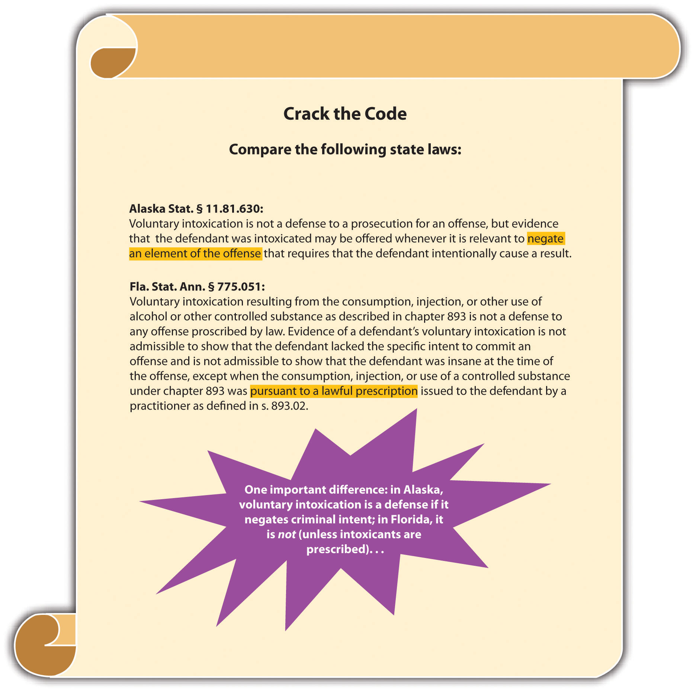
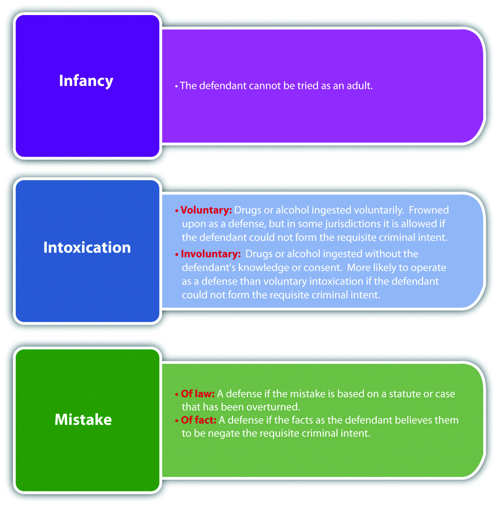

Many states recognize the defense of infancyA defense that asserts the defendant is too young to form the requisite intent for the crime.. Infancy asserts that the defendant is not subject to criminal prosecution because he or she is too young to commit a crime. The policy supporting the infancy defense is the belief that juvenile defendants are too immature to form criminal intent. The infancy defense is typically statutory and can be perfect or imperfect, depending on the jurisdiction.
States divide up the jurisdiction of criminal defendants between juvenile courts and adult courts. Juvenile court systems generally retain jurisdiction over criminal defendants under the age of sixteen, seventeen, or eighteen, with exceptions. The Model Penal Code position is that “[a] person shall not be tried for or convicted of an offense if: (a) at the time of the conduct charged to constitute the offense he was less than sixteen years of age, [in which case the Juvenile Court shall have exclusive jurisdiction]” (Model Penal Code § 4.10(1)(a)).
The primary purpose of a juvenile court adjudication is rehabilitation. The goal is to reform the minor before he or she becomes an adult. In most states, the infancy defense protects a youthful defendant from criminal prosecution as an adult; it does not prohibit a juvenile adjudication. Most minor defendants are adjudicated in juvenile court, so the infancy defense is rarely used.
Juveniles can be prosecuted as adults under certain specified circumstances. At early common law, criminal defendants were divided into three age groups. Those under the age of seven were deemed incapable of forming criminal intent, and could not be criminally prosecuted. Defendants between the ages of seven and fourteen were provided a rebuttable presumption that they lacked the mental capacity to form criminal intent. Once a defendant turned fourteen, he or she was subject to an adult criminal prosecution. Modern statutes codify the adult criminal prosecution standard for different age groups. Some states follow the early common law and set up rebuttable and irrebuttable presumptions based on the defendant’s age.RCW 9A.04.050, accessed December 6, 2010, http://apps.leg.wa.gov/rcw/default.aspx?cite=9A.04.050. Other states set forth a minimum age, such as fourteen or sixteen, and defendants who have reached that age are prosecuted as adults.N.Y. Penal Law § 30.00, accessed December 6, 2010, http://law.onecle.com/new-york/penal/PEN030.00_30.00.html.
When a juvenile court has jurisdiction, the jurisdiction must be forfeited if the juvenile is to be prosecuted as an adult. This process is called waiverThe process by which a juvenile court forfeits jurisdiction over a minor.. Juvenile courts can have exclusive jurisdiction over minors under eighteen, or concurrent or simultaneous jurisdictionTwo courts have jurisdiction over an individual simultaneously. with adult courts, depending on the state.
States vary as to the waiver procedure. Some states allow judges to use discretion in granting the waiver, while others vest this power in the legislature or the prosecutor.Melissa Sickmund, OJJDP National Report Series Bulletin, “Juveniles in Court,” National Center for Juvenile Justice website, accessed December 7, 2010, http://www.ncjrs.gov/html/ojjdp/195420/page4.html. A few factors serve as criteria supporting the waiver to adult criminal court: the nature of the offense, the sophistication it requires, the defendant’s criminal history, and the threat the defendant poses to public safety.Kent v. United States, 383 U.S. 541 (1966), accessed December 7, 2010, http://scholar.google.com/scholar_case?case=5405024647930835755&hl=en&as_sdt=2&as_vis=1&oi=scholarr.
Mario is ten years old. Mario shoplifts some candy from the local market and is arrested. The newly elected district attorney decides to make an example of Mario, and begins an adult criminal prosecution against him for theft. In Mario’s state, the juvenile court has exclusive jurisdiction over individuals under the age of eighteen. Mario can probably claim infancy as a perfect defense to the theft charge. Mario should be adjudicated in juvenile court, not prosecuted as an adult. Therefore, the juvenile court has jurisdiction in this case and Mario’s criminal prosecution should be dismissed.
IntoxicationA mental or physical disturbance caused by alcohol, illegal drugs, or legal drugs. is another defense that focuses on the defendant’s inability to form the requisite criminal intent. In general, intoxication can be based on the defendant’s use of alcohol, legal drugs, or illegal drugs. The Model Penal Code defines intoxication as “a disturbance of mental or physical capacities resulting from the introduction of substances into the body” (Model Penal Code § 2.08(5) (a)). The intoxication defense could be perfect or imperfect, statutory or common law, depending on the jurisdiction.
Intoxication is a state that is achieved either voluntarily or involuntarily. Most states frown on the use of voluntary intoxication as a defense, and allow it only to reduce the severity of the crime charged.N.Y. Penal Law § 15.25, accessed December 7, 2010, http://law.onecle.com/new-york/penal/PEN015.25_15.25.html. Recall from Chapter 4 "The Elements of a Crime" that if a defendant voluntarily undertakes action, such as drinking or ingesting drugs, the voluntary act requirement is met. Conduct that occurs after the voluntary intoxication probably is not excused unless the intoxication prevents the defendant from forming the criminal intent required for the offense.Or. Rev. Stat. § 161.125, accessed December 7, 2010, https://www.oregonlaws.org/ors/161.125. If the crime charged is a reckless intent crime, voluntary intoxication rarely provides even an imperfect defense.Tenn. Code Ann. § 39-11-503(b), accessed December 7, 2010, http://www.lawserver.com/law/state/tennessee/tn-code/tennessee_code_39-11-503.
Involuntary intoxication is more likely to provide a defense than voluntary intoxication. Generally, a defendant can claim involuntary intoxication if he or she ingested the drug or alcohol unknowingly or under force, duress, or fraud.California Jury Instructions No. 3427, accessed December 7, 2010, http://www.justia.com/criminal/docs/calcrim/3400/3427.html. Involuntary intoxication could affect the defendant’s ability to form criminal intent, thus negating specific intent, dropping murder a degree, or converting murder to manslaughter. The Model Penal Code equates involuntary intoxication with the substantial capacity test, providing “[i]ntoxication which (a) is not self-induced…is an affirmative defense if by reason of such intoxication the actor at the time of his conduct lacks substantial capacity either to appreciate its criminality [wrongfulness] or to conform his conduct to the requirements of law” (Model Penal Code § 2.08 (4)).
Clint slips a date rape drug into Delilah’s drink at a fraternity party. Delilah is twenty-one and legally able to consume alcohol. The date rape drug produces a state of unconsciousness during which Delilah severely beats a sorority sister. Delilah can probably claim involuntary intoxication as a defense in this situation. Although Delilah voluntarily drank the alcohol, she became intoxicated from the date rape drug that she ingested unknowingly. Delilah could be acquitted or could have a charge of aggravated battery reduced, depending on the jurisdiction.
Figure 6.7 Crack the Code
Occasionally, a defendant’s mistake negates the criminal intent required for an offense. Mistakes can be a mistake of lawA defense that asserts the defendant incorrectly believes his or her conduct is legal, negating the requisite intent for the crime. or a mistake of factA defense that asserts the facts as the defendant incorrectly believes them to be negate the requisite intent for the crime.. Mistake of law and fact defenses can be statutory or common law, perfect or imperfect, depending on the jurisdiction.
The basis of the mistake of law defense is that the defendant believes his or her criminal conduct is legal. The defense could be a failure of proof defense or an affirmative defense of excuse, depending on the jurisdiction.Tex. Penal Code § 8.03, accessed December 7, 2010, http://www.statutes.legis.state.tx.us/docs/PE/htm/Pe.8.htm. The Model Penal Code provides, “Ignorance or mistake as to a matter of fact or law is a defense if: (a) the ignorance or mistake negatives the purpose, knowledge, belief, recklessness or negligence required to establish a material element of the offense; or (b) the law provides that the state of mind established by such ignorance or mistake constitutes a defense” (Model Penal Code § 2.04(1)).
Most states require that the mistake of law be founded on a statute or judicial decision that is later overturned.La. Rev. Stat. Ann. § 14:17, accessed December 7, 2010, http://law.justia.com/louisiana/codes/2009/rs/title14/rs14-17.html. The Model Penal Code states, “A belief that conduct does not legally constitute an offense is a defense to a prosecution for that offense based upon such conduct when…the actor…acts in reasonable reliance upon an official statement of the law, afterward determined to be invalid…contained in…a statute or…judicial decision” (Model Penal Code § 2.04(3) (b)).
Incorrect advice from a licensed attorney cannot form the basis of a mistake of law defense.Hopkins v. State, 69 A.2d 456 (1949), accessed December 9, 2010, http://www.leagle.com/xmlResult.aspx?xmldoc=1949682193Md489_1637.xml&docbase=CSLWAR1-1950-1985. Nor can mistake of law be rooted in ignorance of the law because all individuals are required to know the criminal laws effective in their jurisdiction. The Model Penal Code provides, “A belief that conduct does not legally constitute an offense is a defense to a prosecution for that offense based upon such conduct when: the statute or other enactment defining the offense is not known to the actor and has not been published or otherwise made available prior to the conduct” (Model Penal Code § 2.04(3) (a)).
Shelby, an attorney, researches current case law and determines that it is legal to sell products over the Internet and not charge sales tax. Shelby starts selling designer clothing on eBay and does not charge her customers any sales tax. The case decision that Shelby relied on is overturned by a court of appeals. Shelby can probably assert mistake of law as a defense to the crime of evading payment of sales tax.
Review the mistake of law defense example given in Section 6 "Example of the Mistake of Law Defense". Assume that in Shelby’s state, it is currently illegal to sell products over the Internet without charging sales tax. Jonathan meets with Shelby, and asks her to research whether he needs to charge sales tax when he sells products over the Internet. Shelby agrees to research the matter and get back to Jonathan the next day with an answer. After Jonathan leaves, Shelby is contacted by her friend Margaret, who wants to take an impromptu trip to New York City. Margaret asks Shelby if she would like to come along. Shelby agrees, rushes home, packs for the trip, and leaves with Margaret. The next day while Shelby is watching a Broadway play with Margaret, Jonathan calls Shelby on her cell phone and asks Shelby what her research revealed about the sales tax question. Even though she has not done any research on the matter, Shelby responds, “I just finished the research. You do not need to charges sales tax when you sell products over the Internet.” If Jonathan thereafter relies on Shelby’s incorrect advice, and sells products over the Internet without charging sales tax, he probably will not be able to assert mistake of law as a defense. Incorrect advice from an attorney cannot excuse criminal conduct, even if the crime is committed because of the faulty legal opinion. Therefore, Jonathan could be charged with tax evasion in this situation.
Mistake of fact is more likely to provide a defense than mistake of law. If the facts as the defendant believes them to be negate the requisite intent for the crime at issue, the defendant can assert mistake of fact as a defense.N.H. Rev. Stat. Ann. § 626:3I (a), accessed December 9, 2010, http://www.gencourt.state.nh.us/rsa/html/lxii/626/626-mrg.htm. Mistake of fact is generally not a defense to strict liability crimes because intent is not an element of a strict liability offense.People v. Olsen, 685 P.2d 52 (1984), accessed December 9, 2010, http://lawschool.courtroomview.com/acf_cases/8639-people-v-olsen.
Mickie sees Rachel, his neighbor, riding his bicycle in her driveway. Mickie walks quickly up to Rachel and demands that she get off the bike and return it to his garage. Frightened, Rachel hops off and runs to her house, leaving the bike behind. Mickie walks the bike over to his garage. Once Mickie reaches the garage, he sees that his bike, which is an exact replica of Rachel’s, is already inside. Mickie may be able to use mistake of fact as a defense to theft. As is discussed in Chapter 11 "Crimes against Property", the intent for theft is the intent to take the property of another person. Mickie believed Rachel’s bike was his. Thus Mickie’s mistake of fact negates the intent required for this offense.
Tina is pulled over for speeding. Tina claims her speedometer is broken, so she was mistaken as to her speed. Tina probably cannot assert mistake of fact as a defense in this case. Speeding is generally a strict liability offense. Thus Tina’s mistaken belief as to the facts is not relevant because there is no intent required for this crime.
Figure 6.8 Comparison of Infancy, Intoxication, and Mistake
Answer the following questions. Check your answers using the answer key at the end of the chapter.